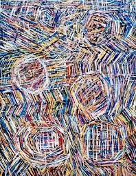
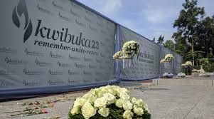
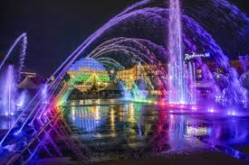
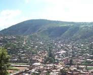
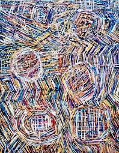
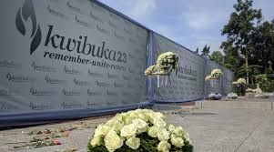
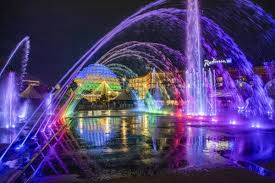
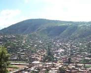

Welcome to the Kigali City Guide, a website created to highlight some of the best things to do and places to visit around Kigali. Kigali is a modern and vibrant city known for its rich history, cultural creativity, and beautiful natural landscapes. This website provides useful and well-organized information about key attractions, including the Kigali Convention Centre, which represents the city’s development and international presence; the Kigali Genocide Memorial, an important site for remembrance and education; Inema Art Centre, a hub for contemporary Rwandan art and cultural expression; and Mount Kigali, a popular destination for outdoor activities and scenic views. Designed using HTML and CSS, this website aims to be informative, user-friendly, and visually appealing for both visitors and locals.
 






